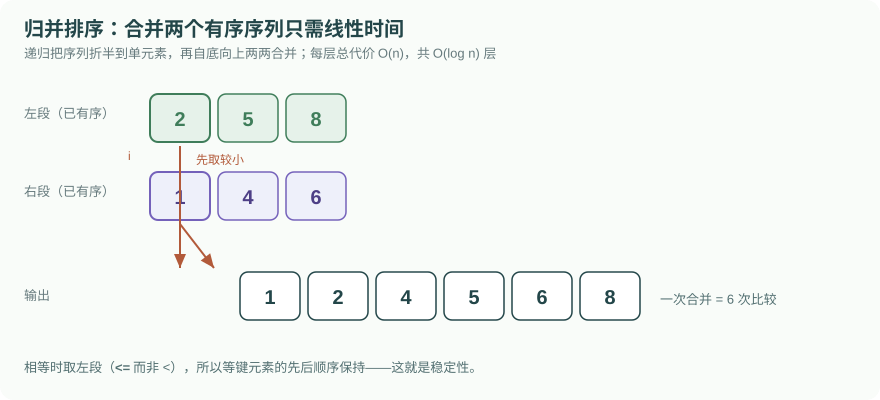
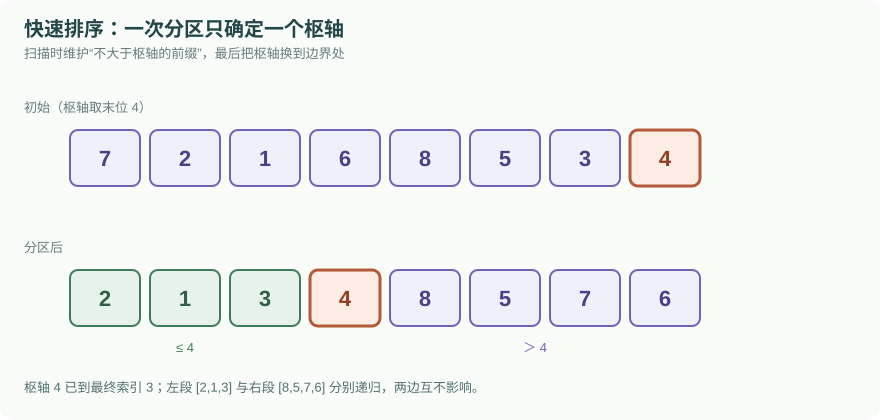
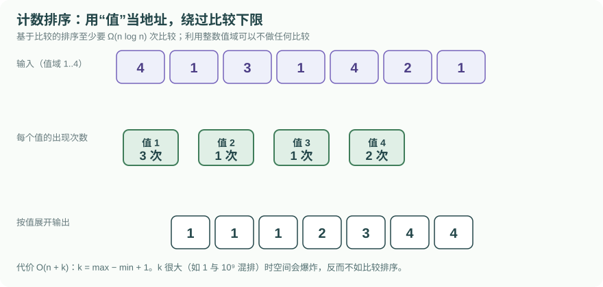

排序算法全览：同一组数据，为什么快慢不同
排序是最常被当作“基本功”的问题，但它真正教你的不是背模板，而是分清三件事：比较排序的下限、不同数据结构带来的常数差异，以及当数据带有额外结构时如何绕过下限。
为什么排序是算法基本功
设想一本没有按拼音排序的通讯录：要找一个名字，只能从头翻到尾。排序的价值就在这里——有序数据让后续操作变简单。数组一旦有序，二分查找能在 O(log n) 次比较内命中，双指针、去重、区间合并也都能在线性时间内完成。
排序还是许多算法的前置条件：Kruskal 最小生成树要先按边权排序（第 13 章），归并思想的逆序对统计、区间合并都建立在排序之上。所以这一章的重点不是“写出几种排序”，而是回答三个问题：比较排序为什么绕不开 O(n log n)？同阶算法为什么实测有快慢？数据带有额外结构时怎样做得更快？
先约定两个贯穿全章的术语。原地排序指只用常数级额外空间（快排的递归栈 O(log n) 通常也按原地计）；稳定排序指相等键在排序后保持原来的相对次序——这在多关键字排序时决定结果的正确性。
O(n²) 三人组：何时反而更快
冒泡、选择、插入三种排序都靠双重循环完成：外层确定已排序部分的边界，内层在未排序部分里找位置。它们的平均与最坏时间都是 O(n²)，但内层做的事不同，导致实际用处也不同。
冒泡排序反复比较相邻两项、逆序就交换，一趟把当前最大值“冒”到末尾；若某趟没有发生交换就说明已有序，可提前结束。选择排序每趟从未排序部分挑出最小值放到边界，交换次数最少（n−1 次）但比较数固定为 O(n²)。插入排序像整理手中的扑克牌：把新牌插入左侧已有序序列的正确位置。
def insertion_sort(a):
a = list(a) # 不改动调用方传入的列表
for i in range(1, len(a)):
key, j = a[i], i - 1
while j >= 0 and a[j] > key: # 比 key 大的都后移一格
a[j + 1] = a[j]
j -= 1
a[j + 1] = key
return a插入排序的三个性质值得单独记住：它是稳定的（a[j] > key 而非 >=，相等的键不会被跨过）；它是原地的；当输入几乎有序时，内层循环几乎不移动元素，时间复杂度退化为 O(n)。因此许多工业级排序在子数组变小时会切换成插入排序——Python 的 Timsort、C++ 的 introsort 都这么做。对 n ≤ 几十的小数组，插入排序的常数因子通常比 O(n log n) 算法还小。
逐步观察插入排序
固定数组 [5, 2, 4, 6, 1, 3]；拖动滑块查看每次外层循环结束后的数组状态。
归并排序：分治 + 稳定
归并排序用分治把问题折半：把数组从中点切成两半，各自递归排序，再把两个有序段合并成一个有序段。“合并”是整套算法的关键：两个有序段各用一个指针，每次比较两个队首，较小者先进输出。因为每个元素只被写一次，合并 m+n 个元素只需 O(m+n) 次比较。

def merge(left, right):
out, i, j = [], 0, 0
while i < len(left) and j < len(right):
if left[i] <= right[j]: # <= 保证稳定性
out.append(left[i]); i += 1
else:
out.append(right[j]); j += 1
out.extend(left[i:]); out.extend(right[j:])
return out
def merge_sort(a):
if len(a) <= 1:
return list(a)
mid = len(a) // 2
return merge(merge_sort(a[:mid]), merge_sort(a[mid:]))递归树一共有 log n 层（每层把问题规模减半），每层的合并总共处理 n 个元素，所以时间复杂度恒为 O(n log n)，与输入是否有序无关。代价是需要一个 O(n) 的辅助数组，这是它相对快排的主要劣势。归并的优点是稳定，并且它只顺序访问数据——这使得它非常适合给链表排序，以及在数据大到装不进内存时的外部排序。
快速排序：一次分区定一个枢轴
快速排序同样用分治，但顺序相反：它先分区、后递归。选一个枢轴（pivot），扫描一遍数组，把不大于枢轴的元素放到左侧、大于枢轴的放到右侧，枢轴落到它在最终有序序列中的位置；再对左右两段分别递归。

def partition(a, lo, hi):
pivot, i = a[hi], lo - 1 # i 指向“不大于枢轴”区域的末尾
for j in range(lo, hi):
if a[j] <= pivot:
i += 1
a[i], a[j] = a[j], a[i]
a[i + 1], a[hi] = a[hi], a[i + 1]
return i + 1 # 枢轴的最终下标每次分区只扫描一遍当前段、做 O(段长) 次比较，但不保证把数组分成均匀的两半——分得多均匀完全取决于枢轴选得好不好。这正是快排平均 O(n log n)、最坏 O(n²) 的根源，也是下一节的主题。
为什么快排实际最快，又最怕有序
三者同属 O(n log n)，但实测中快排常常最快，原因不在渐近阶而在常数因子和内存访问：
- 缓存友好：分区从左到右顺序扫数组，每个缓存行能用满；堆排序在堆中跳跃访问父子节点，缓存命中率低。
- 内层简单：快排的循环体只是一次比较加一次可能的交换；堆排每轮要做更多比较和交换。
- 原地：快排额外空间只有递归栈 O(log n)，而归并要 O(n) 辅助数组，大数组上多了一轮内存复制的开销。
快排的弱点是最坏 O(n²)：若每次选的枢轴恰好是当前段的最大或最小值，分区就退化成一边空、一边满是元素，递归深度变成 n。最典型的触发场景是输入已经有序，而枢轴固定取末位——此时每层都选到最大元素。
import random
def quick_sort(a):
a = list(a)
def rec(lo, hi):
if lo >= hi:
return
r = random.randrange(lo, hi + 1) # 随机枢轴，让有序输入不再退化
a[r], a[hi] = a[hi], a[r]
p = partition(a, lo, hi)
rec(lo, p - 1); rec(p + 1, hi)
rec(0, len(a) - 1)
return a随机选枢轴或三值取中（首、中、尾的中位数）使退化几乎只在极端巧合下发生，期望代价回到 O(n log n)。工业实现通常更进一步：快排递归到小段后改用插入排序，并限制递归深度，超深就退到堆排以免 O(n²)——C++ 的 std::sort 采用的就是这种混合策略（introsort）。
非比较排序：突破 n log n
基于比较的排序有一个下界：n 个元素共有 n! 种排列，每次比较只能把可能性分成两类，决策树深度至少是 log₂(n!) = Θ(n log n)。这条下界的前提是“只能两两比较”。如果数据本身带有値域或分布信息，就可以不比较而直接定位置。

def counting_sort(a):
if not a:
return []
lo, hi = min(a), max(a)
count = [0] * (hi - lo + 1) # 下标 = 值 - lo
for x in a:
count[x - lo] += 1
return [value + lo for value, times in enumerate(count) for _ in range(times)]另外两种线性排序是同一思路的变体。桶排序把値域切成若干区间，数据均匀分布时每桶元素数接近常数，桶内再插入排序，平均 O(n)；分布不均匀时元素全挤进一个桶，退化为 O(n²)。基数排序把整数按个位、十位、百位依次排序，每一轮用稳定的计数排序，共 d 轮（d 为最大位数），代价 O(d(n+k))。
三者都需要额外空间或代价假设：计数、桶排序依赖値域有限，基数排序要求键能按位拆分（非负整数、定长字符串）。打乱这些前提，它们就不再快。
对比表与适用边界
| 算法 | 平均 | 最坏 | 空间 | 稳定 | 何时用 |
|---|---|---|---|---|---|
| 插入排序 | O(n²) | O(n²) | O(1) | 是 | 数据小、几乎有序；作为混合排序的收尾 |
| 选择排序 | O(n²) | O(n²) | O(1) | 否 | 交换成本远高于比较时 |
| 归并排序 | O(n log n) | O(n log n) | O(n) | 是 | 链表、外部排序、需要稳定 |
| 快速排序 | O(n log n) | O(n²) | O(log n) | 否 | 通用内存内排序（随机枢轴） |
| 堆排序 | O(n log n) | O(n log n) | O(1) | 否 | 需要原地且最坏有保障 |
| 计数排序 | O(n+k) | O(n+k) | O(k) | 是 | 范围小的整数/枚举值 |
| 基数排序 | O(d(n+k)) | O(d(n+k)) | O(n+k) | 是 | 定长整数、字符串 |
表中时间均为渐近阶、按比较次数或操作次数计，不是实测秒数；空间按额外辅助空间计（快排的 O(log n) 是递归栈）。
- “O(n log n) 算法一定比 O(n²) 快”：不一定。n 很小时插入排序的常数因子更小，实际更快。
- “快排总是最快”：只在用了随机枢轴或三值取中、且输入能装进内存时成立；有序输入 + 固定末位枢轴会退化成 O(n²)。
- “快速排序是稳定排序”：不是。分区会跨越式交换，等键元素的相对次序不保证。需要稳定就用归并或计数排序。
- “线性排序更快所以更好”：只在値域 k 与 n 同阶时成立。k 运大于 n 时，额外空间和初始化开销都不划算。
- “手写排序优于库函数”：一般不是。语言内置的
sorted是经过调优的混合排序，但理解其原理仍是必要的。
带走三个判断准则
- 先问输入性质再选算法：几乎有序用插入排序，值域小用计数/基数排序，通用大数据量用语言内置的混合排序。
- “稳定性”不是细节：多关键字排序、原始顺序有语义时，归并这类稳定排序会让结果可预测。
- O(n log n) 与 O(n²) 说的是增长阶，不是实测秒数；常数因子、缓存局部性和额外空间决定了同阶算法谁更快。
继续学习与校验资料
- MIT 6.006：Linear Sorting — 计数、基数排序与比较下限
- Python
sorted()/ Timsort — 工业级稳定混合排序的官方说明 - 上一章：图算法 — Kruskal 需要按边权排序，是排序的直接应用
- 运行参考：
examples/sorting.py；测试：tests/test_sorting.py